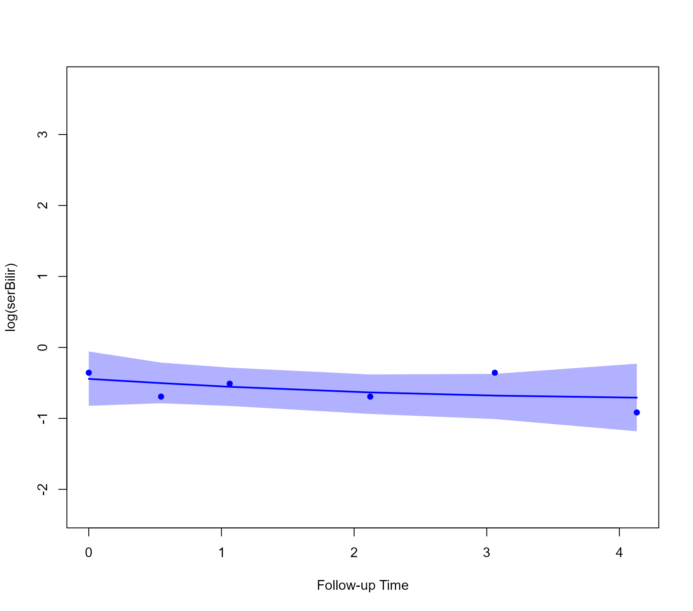
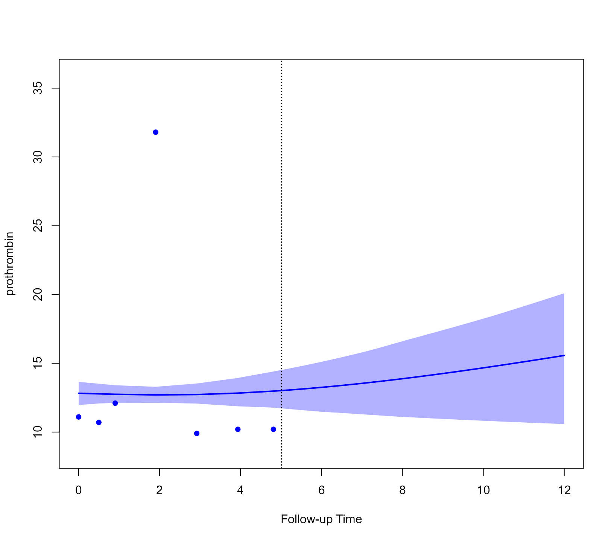
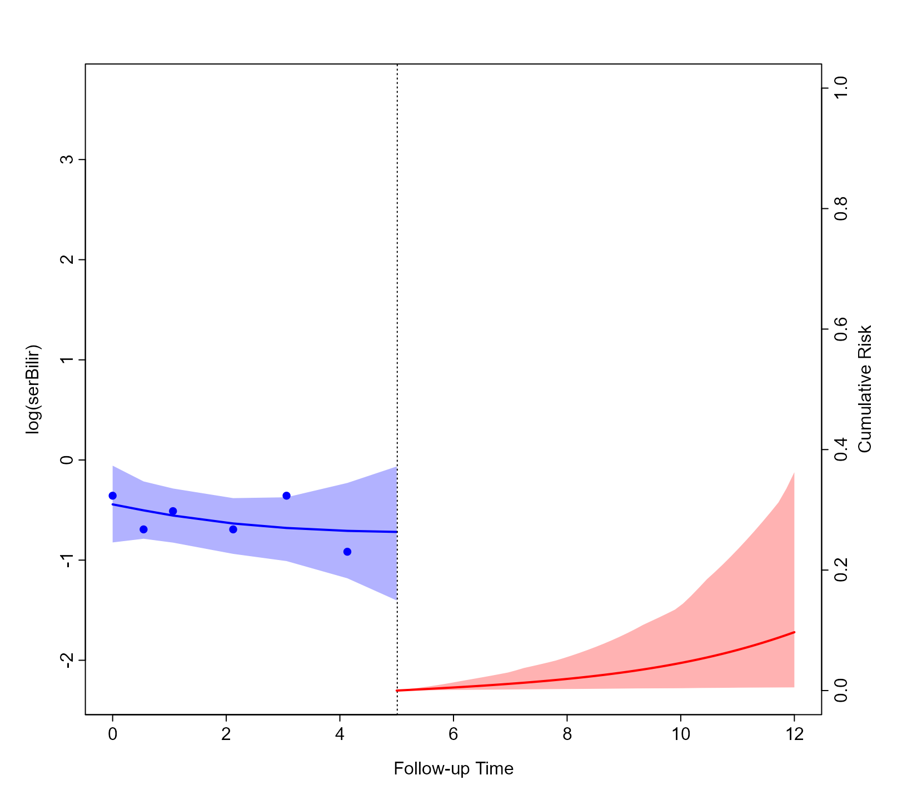
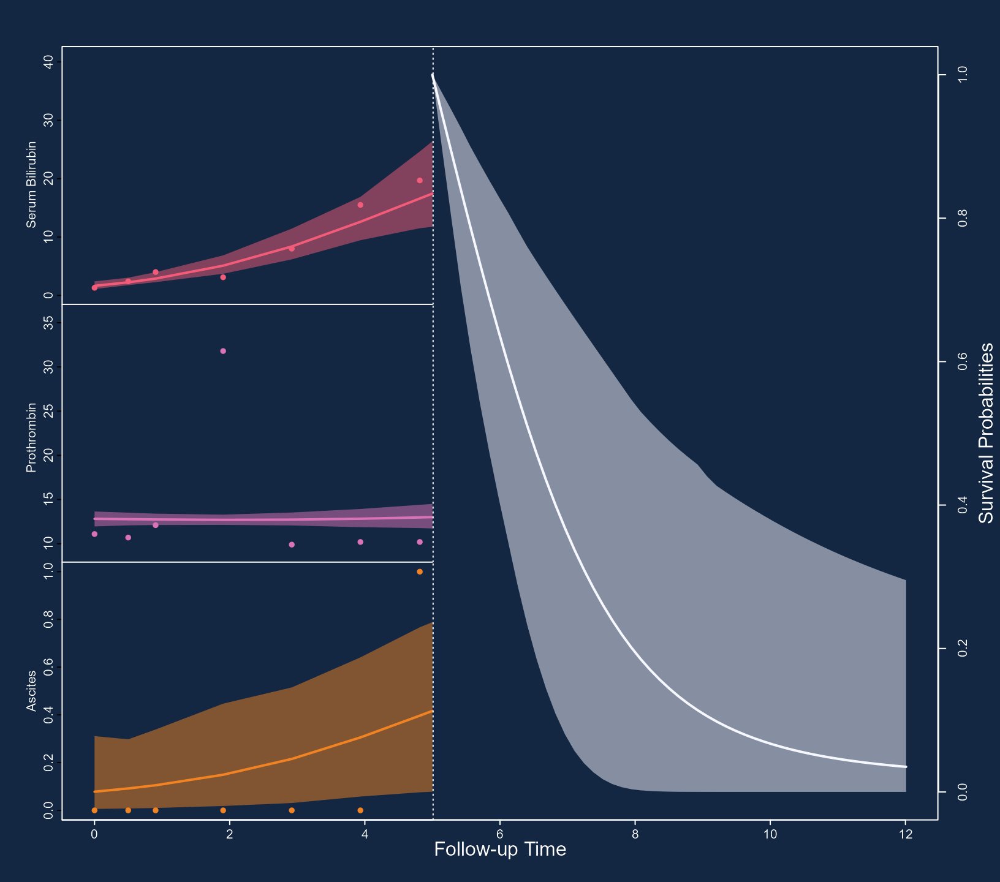
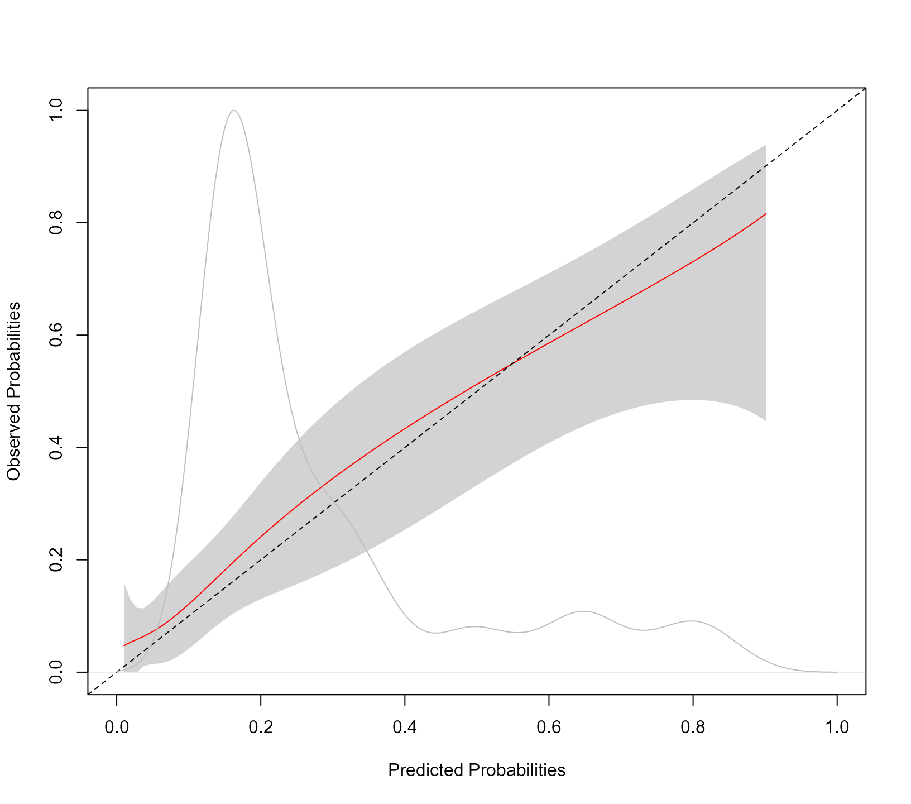

Dynamic Predictions
Dimitris Rizopoulos
2026-11-19
Source:vignettes/Dynamic_Predictions.Rmd
Dynamic_Predictions.RmdDynamic Predictions from Joint Models
Theory
Based on the general framework of joint models presented earlier, we are interested in deriving cumulative risk probabilities for a new subject j that has survived up to time point t and has provided longitudinal measurements \mathcal Y_{kj}(t) = \{ y_{kj}(t_{jl}); 0 \leq t_{jl} \leq t, l = 1, \ldots, n_j, k = 1, \ldots, K\}, with K denoting the number of longitudinal outcomes. The probabilities of interest are \begin{array}{l} \pi_j(u \mid t) = \mathrm{Pr}\{T_j^* \leq u \mid T_j^* > t, \mathcal Y_j(t), \mathcal D_n\}\\\\ = \displaystyle 1 - \int\int \frac{S(u \mid b_j, \theta)}{S(t \mid b_j, \theta)} \; p\{b_j \mid T_j^* > t, \mathcal Y_j(t), \theta\} \; p(\theta \mid \mathcal D_n) \; db_j d\theta, \end{array} where S(\cdot) denotes the survival function conditional on the random effects and \mathcal Y_j(t) = \{\mathcal Y_{1j}(t), \ldots, \mathcal Y_{Kj}(t)\}. Combining the three terms in the integrand, we can devise a Monte Carlo scheme to obtain estimates of these probabilities, namely,
Sample a value \tilde \theta from the posterior of the parameters [\theta \mid \mathcal D_n].
Sample a value \tilde b_j from the posterior of the random effects [b_j \mid T_j^* > t, \mathcal Y_j(t), \tilde \theta].
Compute the ratio of survival probabilities S(u \mid \tilde b_j, \tilde \theta) \Big / S(t \mid \tilde b_j, \tilde \theta).
Replicating these steps L times, we can estimate the conditional cumulative risk probabilities by 1 - \frac{1}{L} \sum_{l=1}^L \frac{S(u \mid \tilde b_j^{(l)}, \tilde \theta^{(l)})}{S(t \mid \tilde b_j^{(l)}, \tilde \theta^{(l)})}, and their standard error by calculating the standard deviation across the Monte Carlo samples.
Example
We will illustrate the calculation of dynamic predictions using
package JMbayes2 from a trivariate joint model fitted
to the PBC dataset for the longitudinal outcomes serBilir
(continuous), prothrombin time (continuous), and
ascites (dichotomous). We start by fitting the univariate
mixed models. For the two continuous outcomes, we allow for nonlinear
subject-specific time effects using natural cubic splines. For
ascites, we postulate linear subject-specific profiles for
the log odds. The code is:
fm1 <- lme(log(serBilir) ~ ns(year, 3) * sex, data = pbc2,
random = ~ ns(year, 3) | id, control = lmeControl(opt = 'optim'))
fm2 <- lme(prothrombin ~ ns(year, 2) * sex, data = pbc2,
random = ~ ns(year, 2) | id, control = lmeControl(opt = 'optim'))
fm3 <- mixed_model(ascites ~ year * sex, data = pbc2,
random = ~ year | id, family = binomial())Following, we fit the Cox model for the time to either
transplantation or death. The first line defines the composite event
indicator, and the second one fits the Cox model in which we have also
included the baseline covariates drug and age.
The code is:
pbc2.id$event <- as.numeric(pbc2.id$status != "alive")
CoxFit <- coxph(Surv(years, event) ~ drug + age, data = pbc2.id)The joint model is fitted with the following call to
jm():
We want to calculate predictions for the longitudinal and survival
outcomes for Patients 25 and 93. As a first step, we extract the data of
these patients and store them in the data.frame ND with the
code:
We will only use the first five years of follow-up (line three) and specify that the patients were event-free up to this point (lines four and five).
We start with predictions for the longitudinal outcomes. These are
produced by the predict() method for class jm
objects and follow the same lines as the procedure described above for
cumulative risk probabilities. The only difference is in Step 3, where
instead of calculating the cumulative risk, we calculate the predicted
values for the longitudinal outcomes. There are two options controlled
by the type_pred argument, namely predictions at the scale
of the response/outcome (default) or at the linear predictor level. The
type argument controls whether the predictions will be for
the mean subject (i.e., including only the fixed effects) or
subject-specific, including both the fixed and random effects. In the
newdata argument we provide the available measurements of
the two patients. This will be used to sample their random effects in
Step 2, presented above. This is done with a Metropolis-Hastings
algorithm that runs for n_mcmc iterations; all iterations
but the last one are discarded as burn-in. Finally, argument
n_samples corresponds to the value of L defined above and specifies the number of
Monte Carlo samples:
predLong1 <- predict(jointFit, newdata = ND, return_newdata = TRUE)Argument return_newdata specifies that the predictions
are returned as extra columns of the newdata data.frame. By
default, the 95% credible intervals are also included. Using the
plot() method for objects returned by
predict.jm(..., return_newdata = TRUE), we can display the
predictions. With the following code, we do that for the first
longitudinal outcome:
plot(predLong1)
When we want to calculate predictions for other future time points,
we can accordingly specify the times argument. In the
following example, we calculate predictions from time t0 to
time 12:
predLong2 <- predict(jointFit, newdata = ND,
times = seq(t0, 12, length.out = 51),
return_newdata = TRUE)We show these predictions for the second outcome and the second
patient (i.e., Patient 93). This is achieved by suitably specifying the
outcomes and subject arguments of the
plot() method:
plot(predLong2, outcomes = 2, subject = 93)
We continue with the predictions for the event outcome. To let
predict() know that we want the cumulative risk
probabilities, we specify process = "event":
predSurv <- predict(jointFit, newdata = ND, process = "event",
times = seq(t0, 12, length.out = 51),
return_newdata = TRUE)The predictions are included again as extra columns in the
corresponding data.frame. To depict the predictions of both the
longitudinal and survival outcomes combined, we provide both objects to
the plot() method:
plot(predLong2, predSurv)
Again, by default, the plot is for the predictions of the first
subject (i.e., Patient 25) and the first longitudinal outcome (i.e.,
log(serBilir)). However, the plot() method has
a series of arguments that allow users to customize the plot. We
illustrate some of these capabilities with the following figure. First,
we specify that we want to depict all three outcomes using
outcomes = 1:3 (note: a max of three outcomes can be
simultaneously displayed). Next, we specify via the subject
argument that we want to show the predictions of Patient 93. Note that
for serum bilirubin, we used the log transformation in the specification
of the linear mixed model. Hence, we receive predictions on the
transformed scale. To show predictions on the original scale, we use the
fun_long argument. Because we have three outcomes, this
needs to be a list of three functions. The first one, corresponding to
serum bilirubin, is the exp(), and for the other two the
identity() because we do not wish to transform the
predictions. Analogously, we also have the fun_event
argument to transform the predictions for the event outcome, and in the
example below, we set the goal of obtaining survival probabilities.
Using the arguments bg, col_points,
col_line_long, col_line_event,
fill_CI_long, and fill_CI_event, we have
changed the appearance of the plot to a dark theme. Finally, the
pos_ylab_long specifies the relative positive of the y-axis
labels for the three longitudinal outcomes.
cols <- c('#F25C78', '#D973B5', '#F28322')
plot(predLong2, predSurv, outcomes = 1:3, subject = 93,
fun_long = list(exp, identity, identity),
fun_event = function (x) 1 - x,
ylab_event = "Survival Probabilities",
ylab_long = c("Serum Bilirubin", "Prothrombin", "Ascites"),
bg = '#132743', col_points = cols, col_line_long = cols,
col_line_event = '#F7F7FF', col_axis = "white",
fill_CI_long = c("#F25C7880", "#D973B580", "#F2832280"),
fill_CI_event = "#F7F7FF80",
pos_ylab_long = c(1.9, 1.9, 0.08))
Predictive accuracy
We evaluate the discriminative capability of the model using ROC
methodology. We calculate the components of the ROC curve using
information up to year five, and we are interested in events occurring
within a three-year window. That is discriminating between patients who
will get the event in the interval (t0, t0 + Dt], (i.e., in
our case T_j \in (5, 8]) from patients
who will survive at least 8 years (i.e., T_j
> 8). The calculations are performed with the following call
to tvROC():
pbc2$event <- as.numeric(pbc2$status != "alive")
roc <- tvROC(jointFit, newdata = pbc2, Tstart = t0, Dt = 3)
roc
#>
#> Time-dependent Sensitivity and Specificity for the Joint Model jointFit
#>
#> At time: 8
#> Using information up to time: 5 (202 subjects still at risk)
#> Accounting for censoring using model-based weights
#>
#> cut-off SN SP
#> 1 0.000 0.00000 1.000000
#> 2 0.044 0.01332 0.997536
#> 3 0.088 0.03494 0.997536
#> 4 0.099 0.03494 0.991115
#> 5 0.103 0.05656 0.991115
#> 6 0.131 0.05656 0.984695
#> 7 0.132 0.07818 0.984695
#> 8 0.144 0.09980 0.984695
#> 9 0.155 0.11673 0.983300
#> 10 0.160 0.13835 0.983300
#> 11 0.165 0.13835 0.976879
#> 12 0.203 0.14958 0.973795
#> 13 0.215 0.17120 0.973795
#> 14 0.223 0.19282 0.973795
#> 15 0.258 0.21444 0.973795
#> 16 0.285 0.23606 0.973795
#> 17 0.296 0.24574 0.970249
#> 18 0.301 0.26736 0.970249
#> 19 0.325 0.31060 0.970249
#> 20 0.333 0.33222 0.970249
#> 21 0.334 0.33222 0.963828
#> 22 0.350 0.35384 0.963828
#> 23 0.354 0.37546 0.963828
#> 24 0.357 0.37637 0.957678
#> 25 0.389 0.39799 0.957678
#> 26 0.400 0.41961 0.957678
#> 27 0.412 0.41961 0.951258
#> 28 0.439 0.44123 0.951258
#> 29 0.475 0.46285 0.951258
#> 30 0.477 0.47233 0.947651
#> 31 0.503 0.49395 0.947651
#> 32 0.522 0.51557 0.947651
#> 33 0.529 0.53719 0.947651
#> 34 0.538 0.55881 0.947651
#> 35 0.539 0.55881 0.941230
#> 36 0.556 0.55881 0.934810
#> 37 0.577 0.55881 0.928389
#> 38 0.629 0.58043 0.928389
#> 39 0.633 0.60205 0.928389
#> 40 0.672 0.60205 0.921968
#> 41 0.674 0.60462 0.916310
#> 42 0.676 0.60462 0.909889
#> 43 0.696 0.60979 0.898585
#> 44 0.698 0.61011 0.892258
#> 45 0.699 0.63173 0.892258
#> 46 0.705 0.63173 0.885838
#> 47 0.718 0.63173 0.879417
#> 48 0.722 0.63617 0.874316
#> 49 0.734 0.64076 0.869257
#> 50 0.737 0.64076 0.862836
#> 51 0.738 0.64076 0.856416
#> 52 0.740 0.64076 0.849995
#> 53 0.747 0.64076 0.843574
#> 54 0.751 0.64076 0.837154
#> 55 0.752 0.64211 0.831136
#> 56 0.755 0.64211 0.824715
#> 57 0.758 0.66373 0.824715
#> 58 0.766 0.66862 0.819746
#> 59 0.772 0.67550 0.808946
#> 60 0.781 0.69712 0.796104
#> 61 0.783 0.69712 0.789684
#> 62 0.788 0.69712 0.783263
#> 63 0.789 0.71874 0.783263
#> 64 0.796 0.71921 0.770564
#> 65 0.798 0.72084 0.764627
#> 66 0.810 0.72447 0.759284
#> 67 0.814 0.72447 0.752863
#> 68 0.825 0.74828 0.747092
#> 69 0.830 0.74891 0.740859
#> 70 0.835 0.74891 0.734439
#> 71 0.839 0.75320 0.722871
#> 72 0.842 0.75320 0.710029
#> 73 0.845 0.77482 0.710029
#> 74 0.851 0.77754 0.704416
#> 75 0.855 0.77754 0.697995
#> 76 0.856 0.77754 0.691575
#> 77 0.860 0.77754 0.685154
#> 78 0.866 0.77810 0.678901
#> 79 0.867 0.79972 0.678901
#> 80 0.876 0.80077 0.672790
#> 81 0.877 0.80077 0.666370
#> 82 0.880 0.80077 0.659949
#> 83 0.886 0.80446 0.648206
#> 84 0.890 0.80446 0.641785
#> 85 0.891 0.80446 0.635364
#> 86 0.893 0.80711 0.610468
#> 87 0.895 0.80899 0.604605
#> 88 0.896 0.80899 0.598184
#> 89 0.898 0.80956 0.591933
#> 90 0.902 0.83118 0.591933
#> 91 0.903 0.83254 0.585917
#> 92 0.904 0.83409 0.579956
#> 93 0.905 0.83409 0.573535
#> 94 0.909 0.83568 0.567586
#> 95 0.910 0.83568 0.548324
#> 96 0.911 0.83568 0.535483
#> 97 0.912 0.85730 0.535483
#> 98 0.913 0.85892 0.529545
#> 99 0.916 0.85957 0.523314
#> 100 0.919 0.88119 0.523314
#> 101 0.920 0.88119 0.516894
#> 102 0.921 0.88385 0.504844
#> 103 0.924 0.88385 0.498423
#> 104 0.925 0.88385 0.485582
#> 105 0.926 0.88385 0.479161
#> 106 0.927 0.90553 0.466337
#> 107 0.929 0.90553 0.447075
#> 108 0.930 0.90553 0.440654
#> 109 0.931 0.90553 0.427813
#> 110 0.932 0.90553 0.421392
#> 111 0.933 0.90618 0.402322
#> 112 0.937 0.90618 0.395902
#> 113 0.938 0.90618 0.389481
#> 114 0.939 0.90618 0.383060
#> 115 0.941 0.90618 0.376640
#> 116 0.942 0.90618 0.370219
#> 117 0.945 0.90618 0.363798
#> 118 0.946 0.92814 0.357480
#> 119 0.947 0.92814 0.351059
#> 120 0.948 0.95041 0.331991
#> 121 0.949 0.95083 0.319274
#> 122 0.951 0.95083 0.312853
#> 123 0.952 0.95092 0.300039
#> 124 0.953 0.95130 0.293729
#> 125 0.954 0.97345 0.287466
#> 126 0.956 0.97345 0.281045
#> 127 0.957 0.97552 0.262398
#> 128 0.958 0.97552 0.249557
#> 129 0.960 0.97552 0.243136
#> 130 0.961 0.97578 0.223951
#> 131 0.962 0.97578 0.211110
#> 132 0.963 0.97688 0.198596
#> 133 0.964 0.97688 0.192175
#> 134 0.965 0.97747 0.185929
#> 135 0.966 0.97747 0.173088
#> 136 0.967 0.97795 0.160390
#> 137 0.968 0.97795 0.147548
#> 138 0.971 0.97795 0.141128
#> 139 0.972 0.97801 0.121884
#> 140 0.975 0.97801 0.115464
#> 141 0.976 0.97801 0.109043
#> 142 0.977 0.97801 0.102622
#> 143 0.978 0.97801 0.096202
#> 144 0.979 0.97801 0.089781
#> 145 0.980 0.97801 0.083360
#> 146 0.981 0.97801 0.076940
#> 147 0.982 0.97801 0.070519
#> 148 0.984 0.97803 0.057682
#> 149 0.985 0.97825 0.051327
#> 150 0.986 0.97825 0.044907
#> 151 0.987 0.99987 0.032065
#> 152 0.988 0.99990 0.019233
#> 153 0.990 0.99990 0.012813
#> 154 0.992 0.99990 0.006392
#> 155 0.994 1.00000 0.000000In the first line we define the event indicator as we did in the
pbc2.id data.frame. The cut-point with the asterisk on the
right maximizes the Youden’s
index. To depict the ROC curve, we use the corresponding
plot() method:
The area under the ROC curve is calculated with the
tvAUC() function:
tvAUC(roc)
#>
#> Time-dependent AUC for the Joint Model jointFit
#>
#> Estimated AUC: 0.8188
#> At time: 8
#> Using information up to time: 5 (202 subjects still at risk)
#> Accounting for censoring using model-based weightsThis function either accepts an object of class tvROC or
of class jm. In the latter case, the user must also provide
the newdata, Tstart and Dt or
Thoriz arguments. Here we have used the same dataset as the
one to fit the model, but, in principle, discrimination could be
(better) assessed in another dataset.
The tvROC() and tvAUC() functions also work
for Cox regression models for right censored data. We compare the added
value of using the longitudinal data compared to only using the baseline
value of the markers,
baseline_Cox <- coxph(Surv(years, event) ~ drug + age + log(serBilir) +
prothrombin + ascites, data = pbc2.id)
tvAUC(baseline_Cox, newdata = pbc2.id, Tstart = t0, Dt = 3)
#>
#> Time-dependent AUC for the Cox Model baseline_Cox
#>
#> Estimated AUC: 0.6737
#> At time: 8
#> Using information up to time: 5 (202 subjects still at risk)
#> Accounting for censoring using model-based weightsTo assess the accuracy of the predictions, we produce a calibration plot:
calibration_plot(jointFit, newdata = pbc2, Tstart = t0, Dt = 3)
The syntax of the calibration_plot() function is almost
identical to that of tvROC(). The kernel density estimation
is of the estimated probabilities \pi_j(t +
\Delta t \mid t) = \pi_j(8 \mid 5) for all individuals at risk at
year t0 in the data frame provided in the
newdata argument. The grey shaded area represents the 95%
pointwise confidence intervals of the predicted cumulative risks
probabilities. Using the calibration_metrics() function we
can also calculate metrics for the accuracy of predictions:
calibration_metrics(jointFit, pbc2, Tstart = 5, Dt = 3)
#> ICI E50 E90
#> 0.03197869 0.02756373 0.04542953The ICI is the mean absolute difference between the observed and
predicted probabilities, E50 is the median absolute difference, and E90
is the 90% percentile of the absolute differences. Finally, we calculate
the Brier score as an overall measure of predictive performance. This is
computed with the tvBrier() function:
tvBrier(jointFit, newdata = pbc2, Tstart = t0, Dt = 3)
#>
#> Prediction Error for the Joint Model 'jointFit'
#>
#> Estimated Brier score: 0.124
#> At time: 8
#> For the 202 subjects at risk at time 5
#> Number of subjects with an event in [5, 8): 40
#> Number of subjects with a censored time in [5, 8): 58
#> Accounting for censoring using model-based weightsThe Brier score evaluates the predictive accuracy at time
Tstart + Dt. To summarize the predictive accuracy in the
interval (t0, t0 + Dt] we can use the integrated Brier
score. The corresponding integral is approximated using the Simpson’s
rule:
tvBrier(jointFit, newdata = pbc2, Tstart = t0, Dt = 3, integrated = TRUE)
#>
#> Prediction Error for the Joint Model 'jointFit'
#>
#> Estimated Integrated Brier score: 0.0833
#> In the time interval: [5, 8)
#> For the 202 subjects at risk at time 5
#> Number of subjects with an event in [5, 8): 40
#> Number of subjects with a censored time in [5, 8): 58
#> Accounting for censoring using model-based weightsFunction tvBrier() also works for Cox models, e.g.,
tvBrier(baseline_Cox, newdata = pbc2.id, Tstart = t0, Dt = 3, integrated = TRUE)
#>
#> Prediction Error for the Cox Model 'baseline_Cox'
#>
#> Estimated Integrated Brier score: 0.0983
#> In the time interval: [5, 8)
#> For the 202 subjects at risk at time 5
#> Number of subjects with an event in [5, 8): 40
#> Number of subjects with a censored time in [5, 8): 58
#> Accounting for censoring using model-based weightsThe tvBrier() and tvROC() also implement
inverse probability of censoring weights to account for censoring in the
interval (t0, t0 + Dt] using the Kaplan-Meier estimate of
the censoring distribution (however, see the note below):
tvBrier(jointFit, newdata = pbc2, Tstart = t0, Dt = 3, integrated = TRUE,
type_weights = "IPCW")
#>
#> Prediction Error for the Joint Model 'jointFit'
#>
#> Estimated Integrated Brier score: 0.0844
#> In the time interval: [5, 8)
#> For the 202 subjects at risk at time 5
#> Number of subjects with an event in [5, 8): 40
#> Number of subjects with a censored time in [5, 8): 58
#> Accounting for censoring using inverse probability of censoring Kaplan-Meier weightsNotes:
- To obtain valid estimates of the predictive accuracy measures (i.e., time-varying sensitivity, specificity, and Brier score) we need to account for censoring. A popular method to achieve this is via the inverse probability of censoring weighting. For this approach to be valid, we need the model for the weights to be correctly specified. In standard survival analysis, this is achieved either using the Kaplan-Meier estimator or a Cox model for the censoring distribution. However, in the settings where joint models are used, it is often the case that the censoring mechanism may depend on the history of the longitudinal outcomes in a complex manner. This is especially the case when we consider multiple longitudinal outcomes in the analysis. Also, these outcomes may be recorded at different time points per patient and have missing data. Because of these reasons, in these settings, Kaplan-Meier-based or Cox-based censoring weights may be difficult to derive or be biased. The functions in JMbayes2 that calculate the predictive accuracy measures use joint-model-based weights to account for censoring. These weights allow censoring to depend in any possible manner on the history of the longitudinal outcomes. However, they require that the model is appropriately calibrated.
- The calibration curve, produced by
calibration_plot(), and the calibration metrics, produced bycalibration_metrics()), are calculated using the procedure described in Austin et al., 2020.
Internal Validation
Cross-Validation
In calculating the predictive accuracy measures presented above, we used the same dataset in which we fitted the models. This is known to produce overoptimistic accuracy estimates. More objective estimates can be obtained using internal validation. This section illustrates how internal validation can be performed in JMbayes2 using cross-validation and the Bootstrap methods.
Both testing and training datasets for both techniques can be created
using the create_folds() function. We start with
cross-validation and split the pbc2 database into five
folds using the syntax:
CVdats <- create_folds(pbc2, V = 5, id_var = "id")The first argument for this function is the data.frame
we wish to split into V folds. The argument
id_var specifies the name of the subject’s id variable in
this dataset. The output of create_folds() is a list with
two components named "training" and "testing".
Each component is another list with V data.frames.
Next, we define the function that will fit the joint models we wish
to consider for calculating predictions. This function should have as a
single argument a data.frame that will be used to fit the
joint models. We will use parallel computing to optimize computational
performance and fit these models to the different training datasets.
Hence, within the function we should have the call
library("JMbayes2") to load package
JMbayes2 for each worker. The output of this function
is the fitted joint model we wish to internally validate.
fit_model <- function (data) {
library("JMbayes2")
# data
data$event <- as.numeric(data$status != "alive")
data_id <- data[!duplicated(data$id), ]
# mixed-effects models
fm1 <- lme(log(serBilir) ~ ns(year, 3) * sex, data = data,
random = list(id = pdDiag(form = ~ ns(year, 3))),
control = lmeControl(opt = 'optim'))
fm2 <- lme(prothrombin ~ ns(year, 2) * sex, data = data,
random = list(id = pdDiag(form = ~ ns(year, 2))),
control = lmeControl(opt = 'optim'))
fm3 <- mixed_model(ascites ~ year * sex, data = data,
random = ~ year | id, family = binomial())
# Cox model
CoxFit <- coxph(Surv(years, event) ~ drug + age, data = data_id)
# joint model
jm(CoxFit, list(fm1, fm2, fm3), time_var = "year")
}We fit the model in the training datasets using parallel computing as facilitated by the parallel package (note: this and the subsequent computations require some time to perform depending on the capabilities of your computing environment):
cl <- parallel::makeCluster(5L)
Model_folds <- parallel::parLapply(cl, CVdats$training, fit_model)
parallel::stopCluster(cl)Before calculating the predictive accuracy measures in the testing
datasets, we must create the event variable in each one.
This is achieved with the following piece of code:
CVdats$testing[] <- lapply(CVdats$testing, function (d) {
d$event <- as.numeric(d$status != "alive")
d
})The following syntax calculates the integrated Brier score in the
testing datasets at follow-up year t0 = 5 and for a window
of Dt = 3 years (we use parallel computing again):
calculate_Brier <- function (v, models, testing_data) {
library("JMbayes2")
tvBrier(models[[v]], newdata = testing_data[[v]], Tstart = 5, Dt = 3,
integrated = TRUE)
}
cl <- parallel::makeCluster(5L)
Brier_per_fold <-
parallel::parLapply(cl, seq_len(5), calculate_Brier, models = Model_folds,
testing_data = CVdats$testing)
parallel::stopCluster(cl)The cross-validated estimate of the integrated Brier score is the average of the estimated Brier scores in the testing datasets:
The calculation of the cross-validated estimate of the AUC at follow-up year 5 and for a window of 3 years proceeds similarly:
calculate_AUC <- function (v, models, testing_data) {
library("JMbayes2")
tvAUC(models[[v]], newdata = testing_data[[v]], Tstart = 5, Dt = 3)
}
cl <- parallel::makeCluster(5L)
AUC_per_fold <-
parallel::parLapply(cl, seq_len(5), calculate_AUC, models = Model_folds,
testing_data = CVdats$testing)
parallel::stopCluster(cl)
average_AUC <- mean(sapply(AUC_per_fold, "[[", "auc"))
average_AUC
#> [1] 0.817337Bootstrap
We continue the illustration of internal validation in
JMbayes2 using the Bootstrap method. The training and
testing datasets are again created with the create_folds()
function by specifying method = "Bootstrap":
bootDats <- create_folds(pbc2, V = 10, id_var = "id", method = "Bootstrap")Argument V now denotes the number of Bootstrap samples
we want to create. Each training Bootstrap sample is a sample with
replacement from the original dataset pbc2. The subjects
not used in the specific Bootstrap sample form the testing dataset. We
fit the joint model in the training datasets using parallel
computing:
cl <- parallel::makeCluster(5L)
Model_bootSamples <- parallel::parLapply(cl, bootDats$training, fit_model)
parallel::stopCluster(cl)Before calculating the predictive accuracy measures in the testing
datasets, we must create again the event variable in each
one.
bootDats$testing[] <- lapply(bootDats$testing, function (d) {
d$event <- as.numeric(d$status != "alive")
d
})Following we calculate the integrated Brier score in each testing dataset and compute the average:
cl <- parallel::makeCluster(10L)
Brier_per_bootSample <-
parallel::parLapply(cl, seq_len(10), calculate_Brier, models = Model_bootSamples,
testing_data = bootDats$testing)
parallel::stopCluster(cl)
average_Brier_bootSamples <- mean(sapply(Brier_per_bootSample, "[[", "Brier"))The evaluation of the model’s predictive accuracy in the testing
datasets will produce a pessimistic estimate of model performance. On
the contrary, the estimate of the integrate Brier score in the
pbc2 dataset used to fit the joint model will be highly
optimistic:
jointFit <- fit_model(pbc2)
Brier_original <- tvBrier(jointFit, newdata = pbc2, Tstart = t0, Dt = 3,
integrated = TRUE)Efron and Tibshirani (1997) proposed the .632 estimator, which combines the performance obtained in the original dataset and the estimates from the Bootstrap samples to reduce the upward bias:
0.368 * Brier_original$Brier + 0.632 * average_Brier_bootSamples
#> [1] 0.08202122We perform the same calculations also for the AUC:
cl <- parallel::makeCluster(10L)
AUC_per_bootSample <-
parallel::parLapply(cl, seq_len(10), calculate_AUC, models = Model_bootSamples,
testing_data = bootDats$testing)
parallel::stopCluster(cl)
average_AUC_bootSamples <- mean(sapply(AUC_per_bootSample, "[[", "auc"))
AUC_original <- tvAUC(jointFit, newdata = pbc2, Tstart = t0, Dt = 3)
0.368 * AUC_original$auc + 0.632 * average_AUC_bootSamples
#> [1] 0.8144799A 95% confidence interval for the AUC in the original sample can be derived by calculating the AUC in the Bootstrap training samples, i.e.,
bootDats$training[] <- lapply(bootDats$training, function (d) {
d$event <- as.numeric(d$status != "alive")
d
})
cl <- parallel::makeCluster(10L)
AUC_per_bootSample_training <-
parallel::parLapply(cl, seq_len(10), calculate_AUC, models = Model_bootSamples,
testing_data = bootDats$training)
parallel::stopCluster(cl)
AUC_per_bootSample_training <- sapply(AUC_per_bootSample_training, "[[", "auc")
AUC_original
#>
#> Time-dependent AUC for the Joint Model jointFit
#>
#> Estimated AUC: 0.8178
#> At time: 8
#> Using information up to time: 5 (202 subjects still at risk)
#> Accounting for censoring using model-based weights
# 95% Bootstrap CI
quantile(AUC_per_bootSample_training, probs = c(0.025, 0.975))
#> 2.5% 97.5%
#> 0.7714136 0.8373936